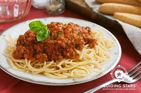

Spaghetti and Meat Sauce

Description
A classic home cooking favorite.
Ingredients
- 1 lb. box of Spaghetti
- 16 oz. jar Ragu Traditional sauce
- 1 lb. ground beef
Steps
- Brown ground beef. Drain.
- Combine sauce and beef, bring to a boil, then reduce heat to low.
- Boil a pot of water.
- Add pasta and boil 7-11 minutes until tender. Drain.
- Combine pasta and sauce. Serve.